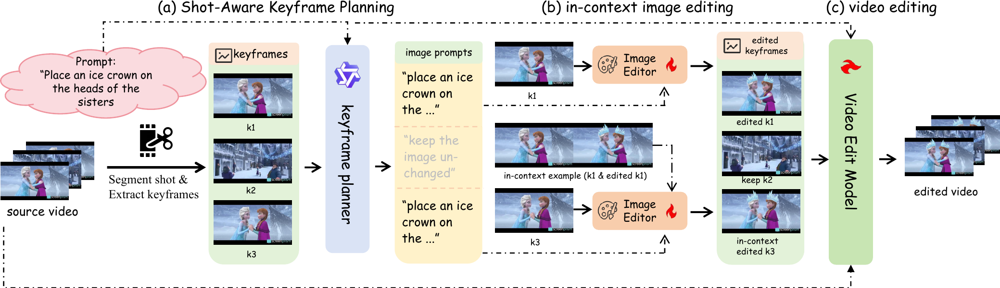

MULTI-SHOT / 01

Shot-wise keyframe anchors
Unicorn: Controllable Multi-Shot Video Editing Framework via Shot-wise Keyframe Anchors
The first controllable framework for multi-shot video editing, combining shot-aware planning, in-context keyframe editing, and edited-frame anchors. Unicorn improves the strongest baseline by 8.94% on MultiShotBench while preserving cross-shot identity.
Manuscript available after review